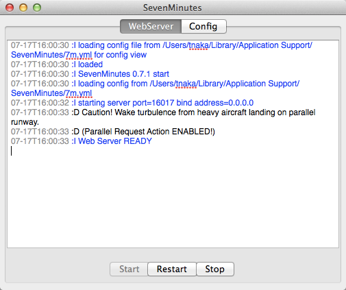

7m is a simple Mac App
that remixes playlists for...
audio contents managed by iTunes
supports Chrome/Firefox/Safari on Mac/PC
play a iTunes playlist in safari
play a smart playlist in a remote browser
and sync back played date at end
so that the smart list updates
ios app